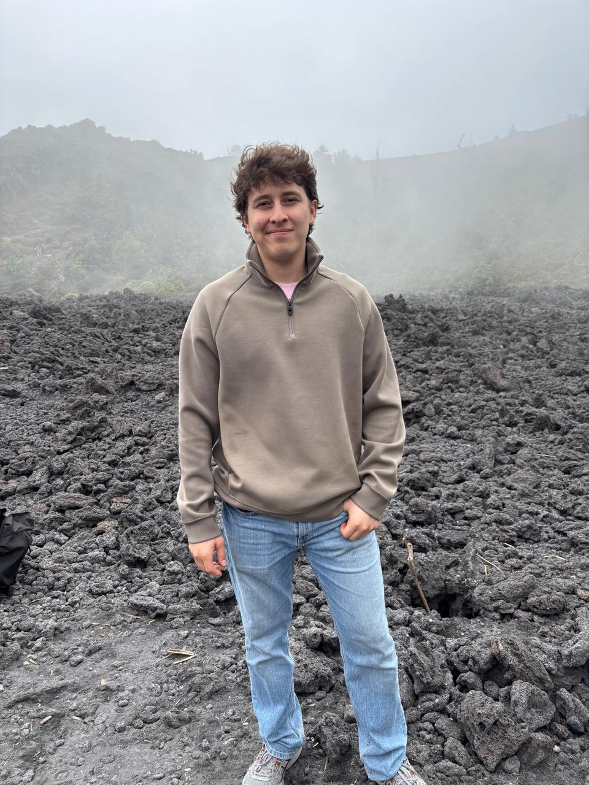

<header>
<h1>Mi CV</h1>
</header>

<nav>
<a href="mailto:alexander.lopez@ufm.edu">Contáctame</a>
<a href="https://github.com/AyyCanchito" target="_blank">Github</a>
<a href="https://gt.linkedin.com/" target="blank">Linkedin</a>
</nav>

<h3>Hobbies</h3>
<ul>
    <li>Estudiar</li>
    <li>Leer</li>
    <li>Me gusta jugar videojuegos</li>
</ul>
    
<h3>Habilidades</h3>
<ul>
    <li>Programar con Python</li>
    <li>Conocimiento en Hardware</li>
</ul>

<h3>Formación académica</h3>
<ul>
    <li>Titulo en bachiller en Ciencias y Letras</li>
    <li>Ingles (intermedio)</li>
</ul>

<section id="educacion">
<h2>Educación</h2>
<table>
    <caption>Historial Académico</caption>
    <thead>
        <tr>
            <th scope="col">Año</th>
            <th scope="col">Institución</th> 
            <th scope="col">Titulo</th> 
        </tr>
    </thead>
    <tbody>
        <tr>
            <td>2016 - 2023</td>
            <td>Colegio Hebrón</td>
            <td>Bachiller en Ciencias y Letras</td>
        </tr>
    </tbody>
</table>

 
